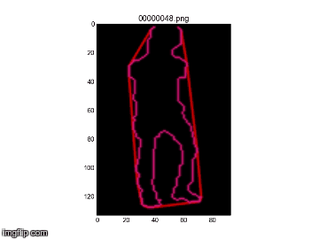
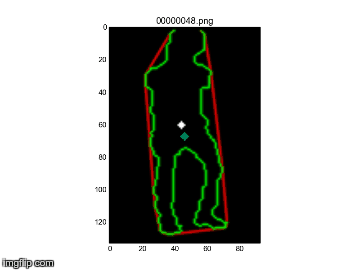
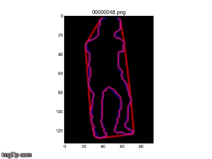
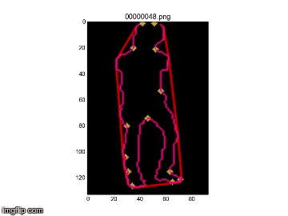
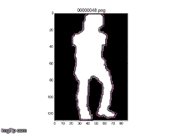
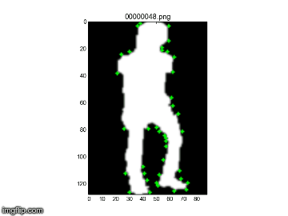
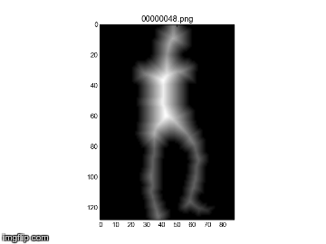
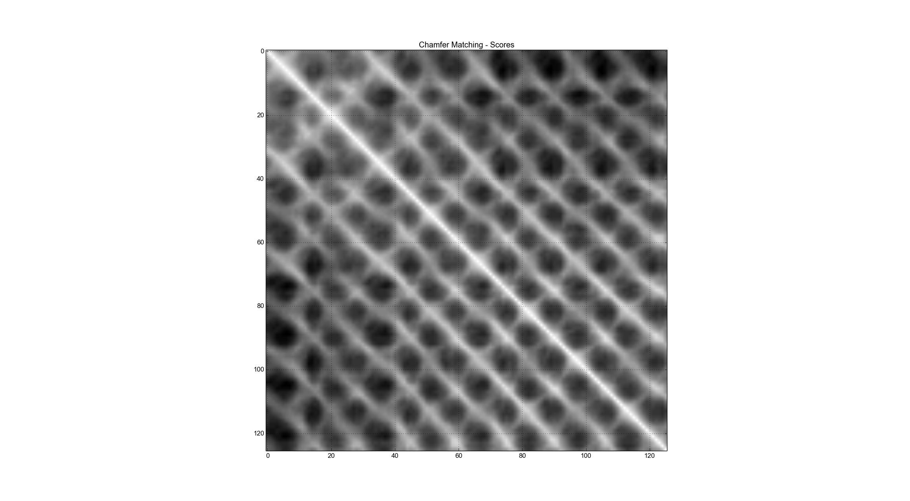

Bhavika Tekwani
Technologist, also human.
CS682: Computer Vision (Spring 2018)
Assignment 4
Code
Report
Part 1 - Silhouette Features
Original frames

Contours and Convex Hulls

Centroids

Polygonal Approximation
Part 2 - Features & Deficits of Convexity

Deficits of Convexity
Table - Computed Features
Part 3 - Curvature

Curvature at each point

Local Maxima for contours
Part 4 - Distance Transform

Distance Transform
Part 5 - Chamfer Matching
